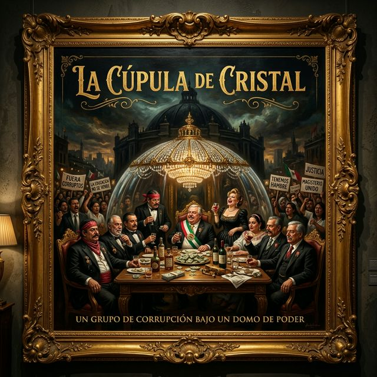
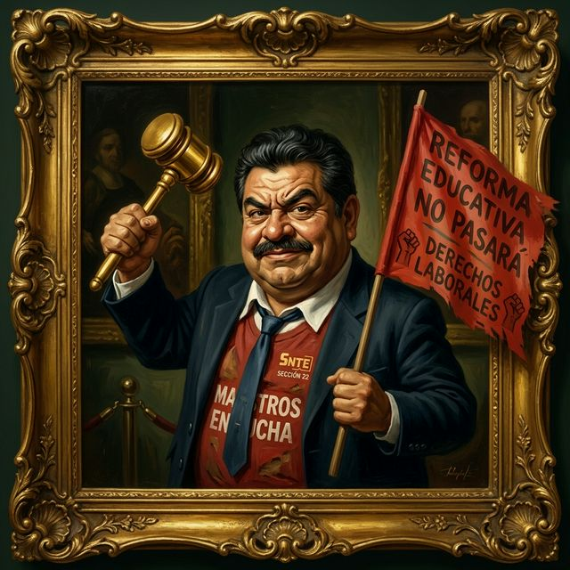
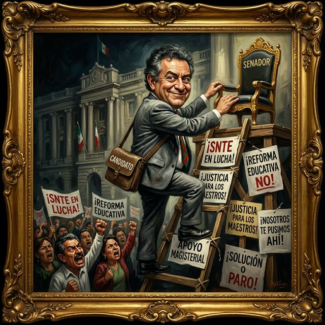
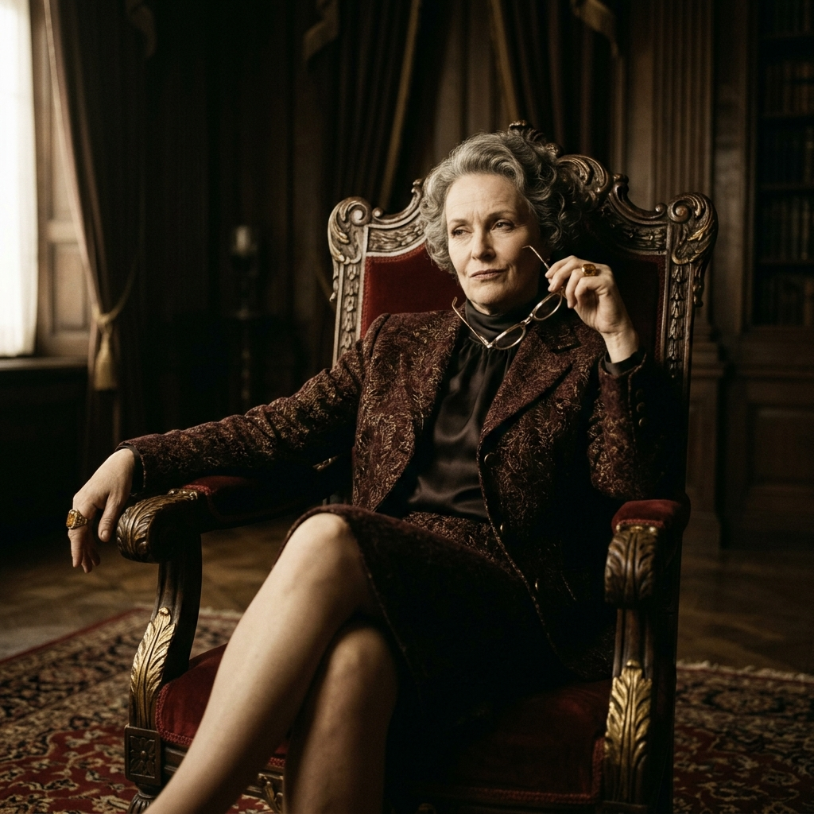
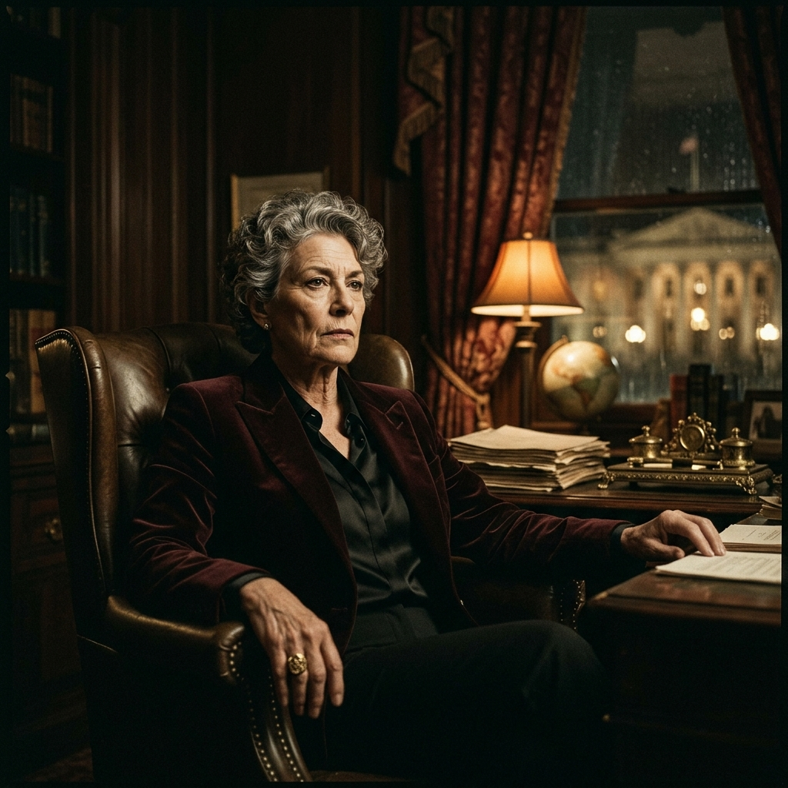

Crónica de la Traición Sindical
Bienvenido a la vitrina de la traición. Una exposición forense de los liderazgos que cambiaron el gis por la curul mientras tú te asoleabas en la lucha. Una mirada cruda a la cooptación institucional.
INICIAR RECORRIDO
Azael Santiago Chepi (Oaxaca - S22)
El salto del tigre con red de protección institucional. Chepi es el maestro del disfraz: un día está con el megáfono quemándose las suelas y al siguiente está de traje italiano votando lo que sus bases juraron destruir.
Adela Piña Bernal (CDMX - S9)
La fundadora del calvario magisterial moderno. De las asambleas radicales saltó a ser la jefa absoluta de la jaula llamada USICAMM. Ella administra el calvario de tus ascensos mientras goza del presupuesto que era para las escuelas.

Raúl Morón Orozco (Michoacán - S18)
Morón no lucha, él escala usando a los profes de peldaños. Infló el movimiento en la Sección 18 y negoció su salida a la alcaldía y luego al Senado. Su lealtad es guinda-partidista, no magisterial.
Irán Santiago Manuel (Oaxaca - S22)
Del manejo de la nómina seccional al presupuesto nacional. Es el operador financiero que cambió la mística por la aritmética del poder. El que paga manda, y él aprendió a mandar muy rápido.
Jorge Ángel Sibaja Mendoza (Oaxaca - S22)
Tan pasado de lanza que sus propios compañeros lo corrieron de las mesas por oportunista. Usó el movimiento como trampolín y ahora la base le estorba para su "brillante" carrera en la curul.

Arcelia López Hernández (Oaxaca - S22)
El nepotismo al óleo. Sobrina del ex-capo Eloy López. Ella no llegó por marchar, llegó por el árbol genealógico. La curul se ganó en la mesa familiar, no en la asamblea educativa.
Antonio de Jesús Madriz Estrada (Michoacán - S18)
Se quitó el overol de lucha y se puso el chaleco de operador de programas sociales para comprar voluntades. Ahora usa el aparato estatal para lo mismo que antes criticaba.

Dolores Padierna Luna (CDMX)
La fundadora que hoy amarra los cables con la SEP. Mientras la CNTE grita afuera, ella les abre la puerta trasera de la oficina del poder. Un pacto que mantiene al maestro entretenido mientras se reparte el pastel.
Casimiro Méndez Ortiz (Michoacán - S18)
Usó el discurso de los pueblos originarios como trampolín y hoy es el vocero oficialista más fiel. Se le olvidaron los usos y costumbres frente a los lujos de la Cámara Alta.
Mesa de Negociación (CNTE) | Curules y Poder
Cooptación Institucional | Traición a la Base
MAGISTERIO SONORENSE (MS)
HONESTIDAD TÉCNICA
JUSTICIA ACTUARIAL
El MS VS La Traición de la Cúpula
Mientras los líderes de la CNTE cobran sus facturas en San Lázaro o la SEP, en Sonora el MS se mantiene firme. Aquí no se cambian plazas por votos. El MS es el espejo donde la cúpula se ve y se asusta.